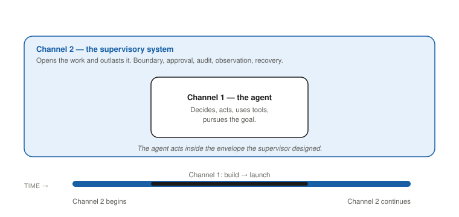
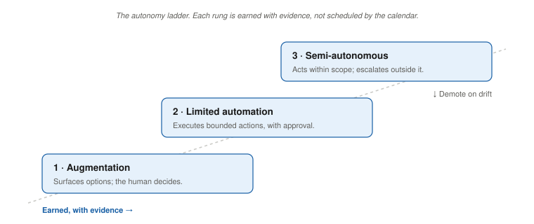

You Are Not a Bridge Anymore
The Assumption Nobody Stated
We have all been in that hotel room. Someone moved the rectangular conference table out and replaced it with clusters of small round ones. Markers in four colors, uncapped. Sticky notes in three colors arranged in neat bricks. The VP of product has blocked his calendar through Thursday. There is something almost touching about the optimism of that arrangement.
This is not a story about those tools becoming useless. It is a story about the assumption buried inside every one of them, and what happens when that assumption stops holding.
Every framework in the vertical SaaS product toolkit was built on a premise so obvious nobody bothered to write it down: the human is the expert, and the software is the instrument.
The nurse manager, the route planner, the claims analyst, the revenue-cycle lead, they understood the job. The software executed it. The PM stood between the human’s need and the software’s capability, translated in both directions, and got out of the way. The bridge metaphor was accurate. You were the bridge.
Agentic AI makes that premise negotiable. Not reversed in some science-fiction sense, but negotiable enough that the old tools start to misfire.
As Chapter 1 described, AI makes certain cognitive acts dramatically cheaper: prediction, pattern recognition, planning. In the systems you are being asked to design now, the software does not just execute a defined workflow. It predicts, plans, chooses tools, and takes a sequence of actions toward a goal. It reasons over incomplete information. Sometimes it does this better than the humans around it. It almost always does it at a volume and speed no human can match.
Once the system is doing the first pass of the reasoning, your job changes. You are no longer designing only the instrument. You are designing the supervisory system around a piece of software that acts. Every framework you know still works. The layer at which you apply it has changed.
If you do not name that assumption before you uncap the markers again, you will do what most seasoned product teams are doing right now: use twenty years of deterministic SaaS instincts to produce the right answers to the wrong problem.
That is the job this guide is about.
Two Products, One PM

When an agent acts and a human supervises, you own two products simultaneously.
The first is the agent itself: what it is allowed to do, what it logs, how it behaves at runtime. This product looks familiar. It involves requirements, workflows, APIs, and integrations. Most teams design it.
The second is the supervisory system: the human experience of watching an agent work, how a person knows what the agent is doing, how they intervene before something irreversible happens, how the supervisory role fits into their existing workflow. Most teams do not design this. They assume it will emerge from training, change-management decks, and the same dashboards they always shipped.
That is where the expensive failures are coming from.
In deterministic SaaS, a poorly supervised system caused slow, recoverable damage: a workflow nobody used, an adoption curve that flattened, a quarter of churn before anyone noticed. In agentic systems, a poorly supervised system compounds errors autonomously. It places orders, sends messages, and changes state on its own. By the time a human notices, they are looking at six months of confirmed work that never happened.
Channel 1 is the agent: its capabilities, autonomy boundary, tool access, and runtime behavior. Channel 2 is the supervisory experience: how humans monitor the agent, intervene when it errs, and maintain appropriate trust over time. Most teams design Channel 1 because it maps onto existing product practice. Most teams skip Channel 2 because they assume training and dashboards will cover it.
The central argument of this book is that Channel 2 is a product that requires the same deliberate design as Channel 1. This is the canonical definition. All later chapters reference this box rather than redefining the terms.
One more wrinkle before the frameworks section. Agentic products often have not one customer but two: the human user and another agent consuming your output downstream. A supplier-risk agent’s user may be a human procurement manager, or it may be a treasury agent inside the same company that reads the supplier-risk agent’s output and acts on it. Both are design targets. The downstream agent has no facial expressions. It will accept confident wrong answers without flinching. Designing for that reader is its own discipline, and one most PMs do not yet recognize as their job.
And one wrinkle on top of that wrinkle. Chapter 1 named the supervision paradox. The supervisor you are designing Channel 2 for is not a fixed quantity. Their competence to perform the supervisory role erodes during the same months your product is in production. The Channel 2 you ship on day one is not the Channel 2 your supervisor population can use on day five hundred. That moves Channel 2 from a launch artifact to a maintenance discipline. Chapter 8 handles the operational side. The Chapter 2 point is only this: when you draw the supervisor on the whiteboard, draw them as a moving target, not a fixed input.
The rest of this chapter covers where the deterministic SaaS canon bends under agentic conditions. The rest of this guide covers how to build the second product deliberately instead of by accident.
The Canon Under Pressure
You already know these frameworks. You do not need them explained. You need to see where each one goes silent when the software starts acting.
Innovator’s Dilemma. You learned that disruptive technologies start simple and cheap, serving customers incumbents ignore. Agentic AI does not show up that way in your world. It is not starting simple or cheap. It is appearing as ambitious pilots inside the products you already ship, aimed at core workflows your best customers care about. The original insight, that incumbents miss transitions because they optimize for the wrong horizon, still holds. What changes is the unit of analysis. What is being disrupted is often a cognitive input: who does the first pass of reasoning, planning, and prediction. Use the framework to understand where your customer’s attention is likely to move, not to map a traditional sustaining-versus-disruptive axis. The PMs who keep this lens tight will see the disruption coming for the cognitive task before they see it coming for the feature category.
Crossing the Chasm. You have already crossed the chasm once in your vertical. The insight that pragmatists need a whole product, integrations, support, reference customers, still holds. For agents, whole product now includes something the original framework did not have language for: governance and supervision. A buyer in the pragmatist majority will not treat an agent as core infrastructure unless they know, concretely, what the agent is doing and where, how they can see that behavior in real time, and who is responsible when the agent is wrong. Those are not UX niceties. They are part of the product you are selling. The pragmatist enterprise buyer of 2026 does not arrive at the conversation asking whether the model is good enough. The buyer arrives asking whether the supervisory architecture is good enough. The team that walks in with a model demo and no supervisory story walks out behind the team that walks in with both.
Jobs to Be Done. JTBD still anchors the PM to real human struggles. People do not want an agent. They want next week’s schedule filled without a labor-budget blowup, freight moved at an acceptable cost, a closed book by day four of the month. The framework holds under agentic conditions, but it needs to be applied at two layers deliberately.
Layer 1 jobs are the ones users can articulate: fill shifts, move freight, close the books. JTBD applies here exactly as it always has. Layer 2 jobs are patterns the agent discovers in data that no human had time to analyze: subtle risk signals for a subset of suppliers, a unit approaching overtime crisis three days before anyone feels it on the floor. These are not jobs the user described; they are jobs the system discovered by reasoning over data no single person had time to analyze. The Layer 2 jobs are not reproducible the way Layer 1 jobs are. You will not get the same pattern twice. That is a probabilistic-system feature, not a bug, and your authorization design has to account for it. The PM’s new responsibility is deciding whether the agent has authority to pursue Layer 2 jobs, and under what conditions. If the agent begins acting on system-discovered jobs without explicit design, you will wake up to behavior your users never consented to.
A useful breath before the next two frameworks. Up to this point, the discussion has been about how the agent understands the problem. The next two frameworks are about how the user interacts with the agent and how you sell the result.
User journey maps. Journey maps assume a human doing the journeying. When an agent handles most steps autonomously, the human’s journey collapses to a short series of intervention points: approve this, review this flag, override this recommendation. What you need is not a richer journey map. You need a boundary map: where is the autonomy boundary, what does the approval moment look like, what is the audit surface, what is the recovery path. Those four surfaces are the runtime design artifacts covered in Chapter 5.
Benefits over capabilities. Selling the outcome, not the feature, is still right. It becomes harder when the capabilities are not fully enumerable at the time of sale. An agent embedded in a hospital or supply chain will surface patterns you did not design explicitly: correlations in supplier behavior, early signals in operational data, waste only visible when operational and financial data are combined. You cannot promise those as specific benefits because you do not know they exist yet. The narrative shifts from “this feature does X” to “this platform will keep proposing X-class improvements, within bounded authority, under a supervision model your customer trusts.” That is a different product story, and it requires a different kind of PM relationship to sustain it.
The frameworks are not wrong. They were built for a world where you understood the problem better than the system did. That is no longer guaranteed.
One more shift in the canon worth naming, because it precedes every other design decision. Name the contract first. Three contracts, exactly. A Suggestion Engine surfaces options and waits; the human decides and acts. A Copilot acts on explicit human confirmation, step by step. An Autonomous Actor executes sequences of decisions without further approval, within a defined scope. These are not points on a maturity scale. They are different products with different accountability models, different testing strategies, and different governance burdens. The most expensive design mistake in agentic AI is a feature that presents itself to users as a Suggestion Engine while being implemented as an Autonomous Actor. Users calibrate trust to the stated contract. When the behavior diverges, the trust mismatch produces exactly the kind of failure that ends up in a post-incident review. Name the contract before engineering starts. Write it into the spec. Check it at every design review. If the contract is changing, that is a scope change and must be treated as one. Chapter 5 develops the runtime artifacts each contract requires.
Agent Washing and the Missing Specification
If you walk into the room with old assumptions and the word agent on your roadmap, you are at risk of a specific failure pattern: agent washing.
You have probably seen early versions of it. A customer service agent that is really a decision tree with a language model at the front. A procurement agent that drafts emails but never changes orders. The demo is impressive. The underlying product is not attached to any decision that matters economically.
One test surfaces this early. Before anyone writes code, ask four questions: Which specific decisions does the agent make? Under what authority and with what stop conditions? How good is good enough, and how will you know? What happens when it is wrong, and who is responsible for detection and recovery?
If your team can talk for twenty minutes about what the agent does when everything goes well and has one sentence for what happens when it is wrong, you do not have a product definition. You have a demo with a launch date.
This is what the rest of the book calls a when-wrong spec: a first-class design artifact, not a QA appendix. It answers those four questions at the same level of detail as the happy path and belongs in the PRD from the start. If your requirements document spends three pages on features and one line on error accountability, it is not a product definition. Chapter 10 builds the when-wrong spec in full, with a named owner on each of its four questions.
The Autonomy Ladder

In deterministic SaaS you were trained to think in terms of feature completeness. A workflow was either fully automated or not. For agents, full automation is not a starting point. It is an earned state.
Three rungs, each with a distinct PM responsibility.
Rung 1. Augmentation. The agent surfaces information and prepares options. The human decides. Your job: design the quality of the recommendation and how uncertainty is communicated, so you do not create blind trust disguised as assistance.
Rung 2. Limited automation with approval gates. The agent executes bounded actions after human confirmation. Your job: design the approval moment, the decision package the human sees, how uncertainty and alternatives appear, and what happens if nobody responds within the defined window.
Rung 3. Semi-autonomous with guardrails. The agent acts within a defined scope and escalates outside it. Your job: design the escalation triggers, audit surface, and recovery workflow, and specify what evidence is required before the system earns this level of autonomy.
Movement up the Autonomy Ladder is earned, not scheduled. Each rung requires demonstrated performance at the rung below, documented evidence of safe operation, and explicit criteria for what safe enough means. Before launch, define the demotion triggers: what thresholds on unintended actions, override frequency, or incident severity force the agent back down a rung. If demotion criteria are not defined before launch, they will be defined under pressure after the first incident.
Most teams in practice schedule the climb. They set a date or a threshold count: after thirty days, after a certain number of supervised actions, after the first quarterly review. None of those is a safety criterion. A schedule measures how much time has passed. It does not measure whether the agent has demonstrated, in the failure modes that matter for this decision type, that it can be trusted at the next rung. Schedule the climb and you are practicing governance theater. The field manual in Chapter 13 gives the Autonomy Ladder its full rubric, including how to define demotion triggers and what earned evidence looks like in practice.
What Changed in Your Job
For twenty years, the PM was the bridge: customers on one side, engineers on the other. Translate, route, prioritize, get out of the way.
The bridge is not gone. Understanding what a customer is trying to do and translating that into something buildable remains the core of the work. What changed is the scope of accountability.
When software was an instrument, you were accountable for the quality of the instrument: did it do what users needed, did it fit their workflow, was it reliable enough? Design and delivery questions. The frameworks for answering them still work.
When software is an agent, when it acts, decides, and compounds its actions over time, you are accountable for something additional: the quality of the supervisory system that wraps around it. Not just what the agent does, but how humans understand what it is doing, how they intervene when it goes wrong, and who is responsible when something it did autonomously causes harm.
Most teams are designing half a system. They design the agent runtime and treat the human side as a rollout problem, something change management will handle after the product ships. That is the central mistake this guide is organized around.
And, as Chapter 1 argued, the supervisory side is not a static design problem. The supervisor population you are designing for is being reshaped by the product itself. The PM who designs Channel 2 once and stops paying attention is designing for a population that no longer exists six months later. Your accountability now extends across time, not just across the launch.
You are building an agent and the human system that supervises it. Both are product problems. Both require deliberate design from the start. The PM who designs only one of them has not shipped a product. They have shipped something that will eventually generate an incident the post-mortem cannot fully explain, because nobody designed the system that was supposed to prevent it.
A Note on What the Vendors Call You
Platforms will call you a builder, an agent developer, an AI engineer, an AI product manager, or an orchestrator, depending on which vendor’s documentation you happen to be reading. The label is a vendor choice, not a job description. This book keeps saying PM because the judgment the work requires is the PM’s judgment, regardless of what the platform’s marketing page calls you.
When a vendor talks about what their builders can do, they are describing what their tool will let you do. What you actually owe the product, the users, and the affected people is not set by the tool. It is set by the role. Appendix A covers how to read vendor pages once you know what each label signals.
What This Chapter Gave You
The hotel room with the round tables and the four colors of markers is not the wrong place to start. It is the right place to start, run with a different set of questions than the ones the methodology was built to answer.
The PM job did not get simpler. It got bigger. The bridge work is still there. The instrument design is still there. What was added is a second product, the supervisory system, and a second discipline, holding that supervisory system stable as the agent reshapes the population that uses it. Most teams are not yet doing this work. The teams that are doing it well are quiet about it, because the failure mode is invisible until it is not.
Three artifacts to carry into Chapter 3: the Channel 1 / Channel 2 distinction, the when-wrong spec as a first-class design document, and the autonomy ladder as an earned, not scheduled, climb.
Chapter 3 turns from role to candidacy. Not every problem deserves an agent, and the most expensive mistake you can make is deploying one into a problem that was never a fit. The next chapter is the candidacy assessment that keeps you out of that mistake.
- Every agentic product is two products: Channel 1, the agent, and Channel 2, the supervisory system. Most teams design the first and assume the second handles itself.
- The PM’s job expanded. You no longer design only the instrument; you design the system that supervises software that acts, decides, and compounds errors on its own.
- The autonomy ladder is earned, not scheduled. Each rung needs evidence at the prior one, plus demotion triggers. A calendar date is not a safety criterion.
- Name the contract before engineering starts: suggestion engine, copilot, or autonomous actor. Each is a different product with a different accountability model.
- The when-wrong spec is a first-class artifact, not a QA appendix. Three pages on the happy path and one line on accountability is a demo, not a product.